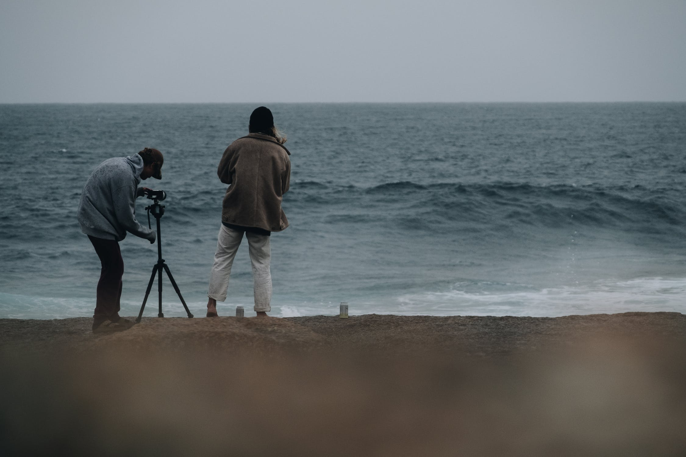

Built by Randal Armstrong

This award winning site is the result of many years of gathering and collating information on the dived wrecks around the whole of the Irish coast.
Information held on each wreck site is in a "potted" form, as most divers only require the bare bones with regards to historical details. If further information is required on a particular vessel, the publications and personnel from whom the details were gleaned are also included. Photographs of some of the vessels are credited where known, but in particular, thanks must go to Dr. Edward J. Bourke for the free use of his extensive photo library, to "Shipwrecks of the Ulster Coast" author Ian Wilson, and to the numerous shipwreck websites for their permission, and to Michael Montgomery, Castlereagh SAC. As always, divers are requested to "look but not touch", so that others coming behind you can marvel at the treasures beneath our waves.
Randal has been involved in the Northern Ireland diving scene since 1976 and is a former Chairman of Castlereagh SAC, Belfast; an Advanced Diver, Advanced Instructor, a former member of the Castlereagh SAC Technical Section and former Chairman of the Northern Ireland Federation of Sub Aqua Clubs.